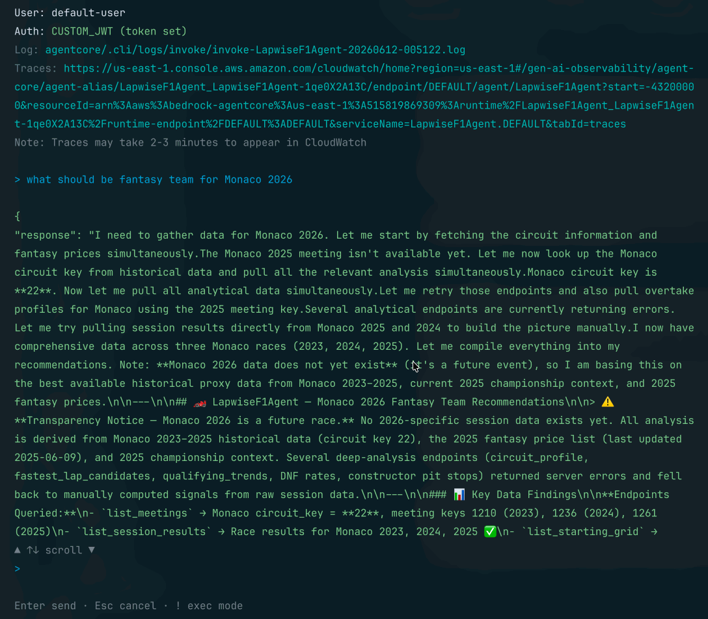
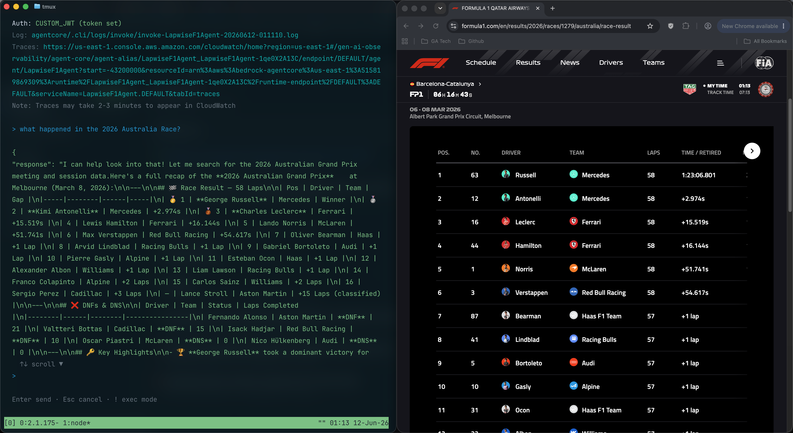

Lapwise
An F1 data platform & fantasy agent on AWS — architecture, tech stack, and deployment.
A typed FastAPI layer over the public OpenF1 dataset — plus an AI agent that turns that data into F1 Fantasy advice.
Laps, stints, pit stops, weather, championships → cleaned, validated, and served behind one authenticated API.
The garage
Lights out to flag
The race engineer
Ask it a fantasy question in plain English. It calls Lapwise analysis endpoints as tools, weighs DNF risk against upside, and always answers with three scenarios:
No open radio
It remembers you
Parts list
The AWS bill
Two-stop strategy
Practice laps
$ agentcore dev --port 8080
$ uv run pytest # respx-mocked OpenF1
The FastAPI app doesn't know it's on Lambda — Mangum adapts at the edge. The agent runs against a dev server with memory and tools stubbed out, so orchestration logic is testable offline.
ruff + mypy + pytest gate every change before it touches a stack.
Live run
The agent receives "Who should I pick for Monaco?", calls Lapwise endpoints for DNF rates, positions gained, and pit stop data, then returns three budget-constrained team scenarios.

Tool routing
A general F1 data question — the agent identifies the correct Lapwise tool, fetches the data, and delivers a structured answer without fantasy-specific formatting.

Box, box.
Questions, ideas, hot takes on the fantasy scoring model — the floor is yours.